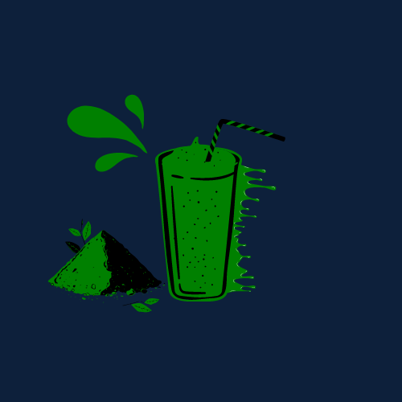

MATCHA MILK TEA
Ingredients:
1 teaspoon matcha green tea powder
1/4 cup hot water (not boiling, about 175°F or 80°C)
3/4 cup milk (dairy or any plant-based alternative)
Ice cubes (optional, for serving cold)
Sweetener (honey, sugar, or syrup) to taste
PROCEDURE
Dissolve Matcha:
Sift the matcha powder into a cup to avoid clumps. Add the hot water and
whisk vigorously in a zigzag motion until the matcha is fully
dissolved and there’s a light froth on top.
Heat Milk:
If you prefer your tea warm, heat the milk in a small saucepan
just until hot but not boiling. For a cold drink, skip heating the milk.
Combine:
Add the milk to the dissolved matcha.
Stir well to combine everything evenly.
Sweeten:
Add your preferred sweetener to taste and stir until dissolved.
Serve:
For a hot beverage, serve as is. For an iced version,
fill a glass with ice cubes and pour the matcha milk tea over the ice.